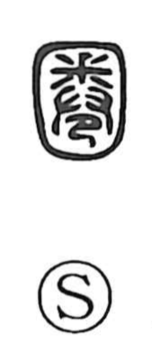

圈

Uncategorized
Kun: kakoi | On: ken
enclosure ・ pen ・ circle ・ sphere ・ domain
Explanation
A phono-semantic character with 卷 (巻) as its phonetic, 圈 originally evokes a rolled-up animal hide, its clawed tips visible—an image of curling and encircling that gives the sense of a bounded, round space. In early usage, as noted in the Shuowen, it names an enclosure for animals—seen in expressions like 虎圈, a tiger pen—better understood not as a tight cage but as a corral or pasture-like area where animals are kept. From this concrete pen or ring, the meaning extends naturally to any circumscribed domain: at a small scale the circular reading mark 圈点, and at grander scales spheres such as 支配圈, a realm of control, and 大気圏, the atmosphere.